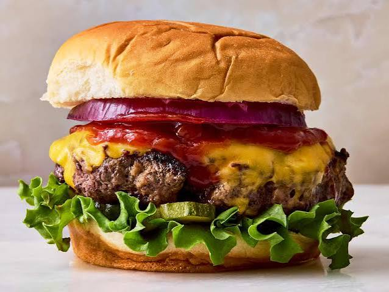

Burger
Home

Description
A juicy, thick-cut cheeseburger built for serious burger lovers. The beef patty is seared to a deep, caramelized crust while staying tender inside, then draped in melted golden cheddar that's just beginning to ooze over the edges. It's topped
with a tangy swipe of ketchup, crisp raw red onion rings for a sharp bite, and a few slices of pickle tucked underneath for acidity. A bed of crinkly green lettuce adds crunch and freshness, all sandwiched between a soft, lightly toasted brioche-style bun with a golden, glossy top. It's the
kind of no-frills, classic burger that leans on quality ingredients and proper cooking technique rather than a long list of toppings — simple, hearty, and satisfying.
Ingredients
- 4 brioche burger buns
- 1 cup shredded lettuce (green leaf or romaine)
- 1 small red onion sliced into rings
- sliced dill pickles
- Butter, for toasting buns
- Ketchup
Steps
- Shape the patties: Divide 680 grams ground beef (80/20) into 4 equal
balls, then gently flatten into patties slightly wider than your buns (they'll shrink as they cook). Season both sides generously with 1 teaspoons salt and 0.5 teaspoons black pepper. Don't overwork the meat.
- Sear the burgers: Heat a skillet or griddle over high heat. Place patties in and sear without pressing down.
- Flip and add cheese: Flip the patties, then immediately top each with a slice of 4 sharp cheddar cheese slices. Cook until the cheese melts and the beef reaches your desired doneness.
- Toast the buns: While the patties finish, spread 2 tablespoons butter, softened on the cut sides of 4 brioche burger buns and toast face-down in a dry pan or under a broiler until golden.
- Assemble: On each bun bottom, layer 1 cups shredded lettuce, a cheeseburger patty, a few slices of 12 sliced dill pickles, a swipe of 4 tablespoons ketchup, and rings of 1 red onion, sliced into rings. Close with the bun top and serve immediately.